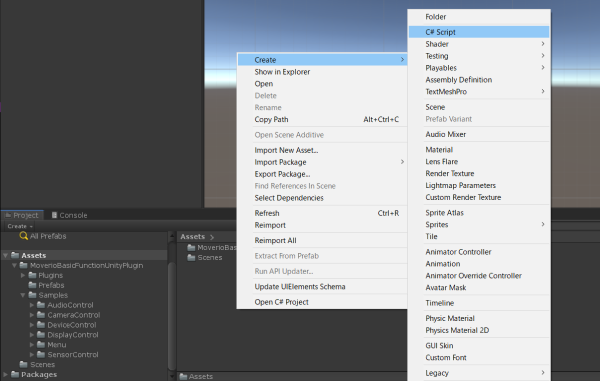

This section describes how to control camera with the Unity app.
Create a Unity project and import the package
Refer to Create a Unity project for how to create
Drag and drop MoverioCamera into the hierarchy window
Create a Render Texture
Click Moverio Camera in the Hierarchy window
Drag and drop the Render Texture created in 3. to the Camera Preview Render Texture in the Moverio Camera Inspector.
Create a raw image
Drag and drop the Render Texture created in 3. to the Raw Image (Script) Texture in the Raw Image Inspector created in 6.
Describes how to acquire capture data.
Create a Unity project and import the package
Refer to Create a Unity project for how to create
Drag and drop MoverioCamera into the hierarchy window
Create a script

Create a function to acquire capture data
public void OnCaptureData(byte[] data)
{
}Attach script to GameObject
Click MoverioCamera in the Hierarchy window
Click the “+” on the Moverio Camera (Script) On Capture Data in the MoverioCamera Inspector to add an event.
Drag and drop the GameObject to which the script was attached in step 5 in the hierarchy window to the event.
Select the function to receive the On Capture Data event notification.
Please refer to API Reference for API specifications.
Describes how to shoot still image.
Create a Unity project and import the package
Refer to Create a Unity project for how to create
Drag and drop MoverioCamera into the hierarchy window
Create a script
Add using
Open the script created in 3 and describe as using MoverioBasicFunctionUnityPlugin;
using MoverioBasicFunctionUnityPlugin;Call a function
Describe the API you want to use like MoverioCamera.TakePicture
Refer to the following script for the description method of each function
|
label |
script |
|---|---|
|
Take picture |
TakePictureController.cs |
Create a function to receive notification of completion of still image shooting
public void OnPictureCompleted()
{
}Attach script to GameObject
Click Moverio Camera in the Hierarchy window
Click the “+” on Moverio Camera (Script) On Picture Completed in the MoverioCamera Inspector to add an event.
Drag and drop the GameObject to which the script was attached in 7. in the hierarchy window to the event.
Select the function to receive the On Picture Completed event notification.
Please refer to API Reference for API specifications.
Describes how to shoot video.
Create a Unity project and import the package
Refer to Create a Unity project for how to create
Drag and drop MoverioCamera into the hierarchy window
Create a script
Add using
Open the script created in 3 and describe as using MoverioBasicFunctionUnityPlugin;
using MoverioBasicFunctionUnityPlugin;Call a function
Describe the API you want to use like MoverioCamera.StartRecord or MoverioCamera.StopRecord
Refer to the following script for the description method of each function
|
label |
script |
|---|---|
|
Start record |
VideoRecordController.cs |
|
Stop record |
VideoRecordController.cs |
Create a function to be notified of the start and completion of video recording
public void OnRecordStarted()
{
}
public void OnRecordStopped()
{
}Attach script to GameObject
Click MoverioCamera in the Hierarchy window
Click the Moverio Camera (Script) On Rcord Started and On Record Stopped “+” in the MoverioCamera Inspector to add an event.
Drag and drop the GameObject to which the script is attached in 7. in the hierarchy window to each event.
Select the function to receive On Rcord Started and On Record Stopped event notifications.
Please refer to API Reference for API specifications.
Describes how to change camera property.
Create a Unity project and import the package
Refer to Create a Unity project for how to create
Drag and drop MoverioCamera into the hierarchy window
Create a script
Add using
Open the script created in 3 and describe as using MoverioBasicFunctionUnityPlugin;
using MoverioBasicFunctionUnityPlugin;Call a function
Get MoverioCamera.CameraProperty with ** MoverioCamera.GetProperty **
Describe the property for which you want to change the settings.
Refer to the following script for the description method of each function
| label | script |
|---|---|
| Brightness | SetPropertyController.cs |
| White balance mode | SetPropertyController.cs |
| Gain | SetPropertyController.cs |
| Focus distance | SetPropertyController.cs |
| Exposure compensation mode | SetPropertyController.cs |
| Exposure compensation step | SetPropertyController.cs |
| Focus mode | SetPropertyController.cs |
| Resolution | SetPropertyController.cs |
| Power line frequency | SetPropertyController.cs |
| Farame rate | SetPropertyController.cs |
| Indicator mode | SetPropertyController.cs |
Set the MoverioCamera.CameraProperty whose settings have been changed with ** MoverioCamera.SetProperty **
Create a function to receive notification of camera property setting completion
public void OnSetPropertyCompleted(bool result)
{
}Attach script to GameObject
Click Moverio Camera in the Hierarchy window
Click the “+” on Moverio Camera (Script) On Set Property Completed in the MoverioCamera Inspector to add an event.
Drag and drop the GameObject to which the script is attached in 7. in the hierarchy window to each event.
Select the function to receive the On Set Property Completed event notification.
Please refer to API Reference for API specifications.